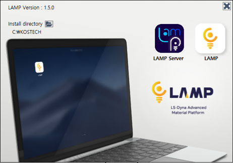
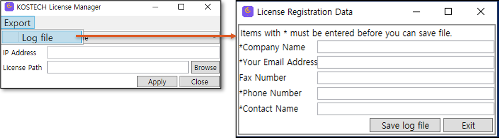
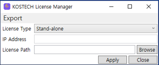
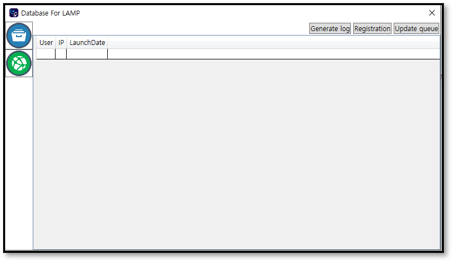
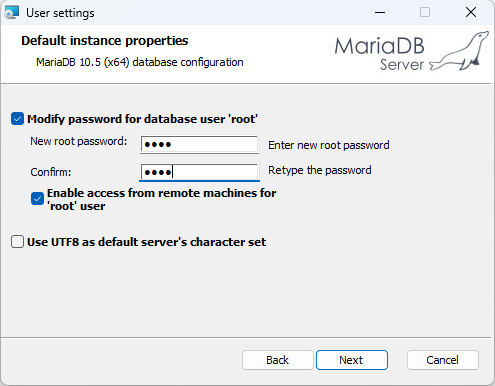
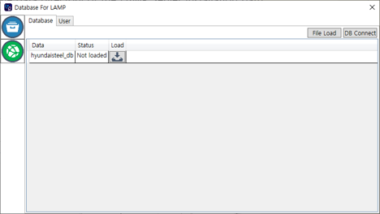
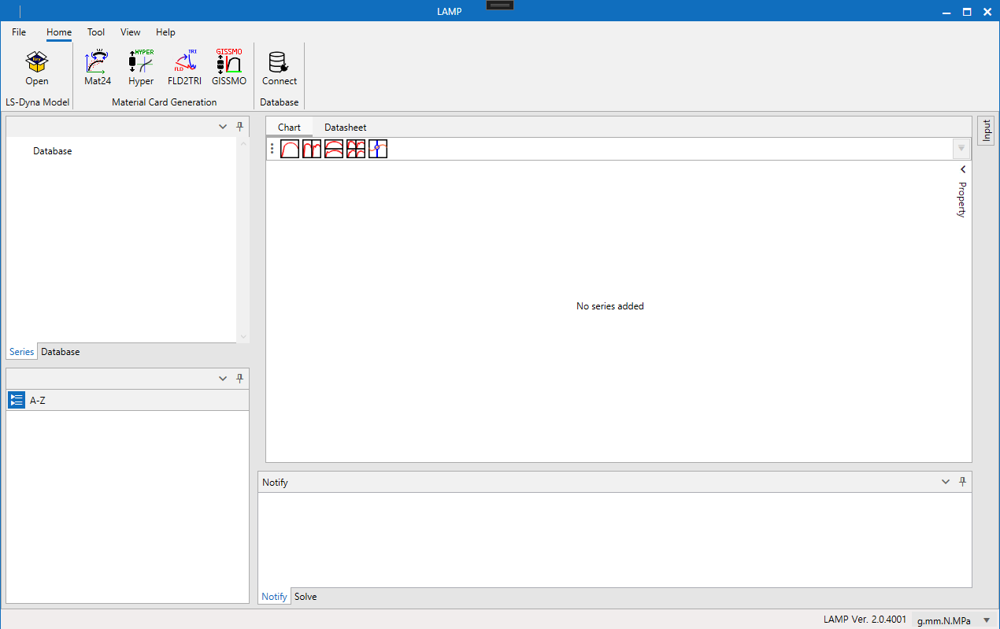

시작하기
1. Introduction
LAMP(LS-Dyna Advanced Material Platform)는 한국시뮬레이션기술에서 개발하고 있는 프로그램으로 LS-Dyna 사용자들이 재료 물성 카드를 생성 및 관리할 수 있도록 다양한 기능들을 제공하여 LS-Dyna 해석 소프트웨어 활용에 편의성을 제공합니다. LAMP는 현재 한국시뮬레이션기술에서 LS-Dyna를 구매하고 유지보수를 유지하고 계시는 고객들에게 제공되고 있습니다.
2. Installation
LAMP 설치를 위해 압축파일이 제공되며, 압축 해제 후 LAMP Installer.exe 파일을 실행하면 아래와 같은 설치 화면이 표시됩니다.

2.1 경로 변경
설치 경로는 Install directory 우측 아이콘을  클릭 하여 변경 할 수 있습니다.
클릭 하여 변경 할 수 있습니다.
2.2 LAMP Server 설치
LAMP에서 제공하고 데이터베이스 및 네트워크 라이선스를 관리 할 수 있는 프로그램으로 데이터베이스 및 네트워크 라이선스를 관리 할 장비에 설치합니다.
2.3 LAMP 설치
사용자 PC에 LAMP를 설치합니다.
3. License 발급
LAMP 설치 이후에 LAMP를 사용하기 위해서는 한국시뮬레이션기술에서 라이선스를 제공받으셔야 합니다. 현재 LAMP 개발 진행중인 소프트웨어로 한국시뮬레이션에서 LS-Dyna를 구매하고 유지보수를 유지하고 계시는 고객들에게 2개월동안 사용가능한 라이선스가 발급됩니다. 로컬 PC 1대에 사용가능한 stand-alone license와 서버 PC 1대에 license를 위치 시키고 1대 이상의 client PC에서 사용가능한 network license를 사용할 수 있습니다. 라이선스 발급은 라이선스 파일이 위치할 PC의 로그 정보를 한국시뮬레이션기술에 제공해주시면 해당 PC에 대한 라이선스를 발급해드립니다.
3.1 Stand-alone license
개인 local PC 1대에 LAMP를 사용하기 위한 라이선스로 LAMP 설치 시 함께 설치되는 LicenseManager에서 로그 파일을 생성 할 수 있으며, 발급되는 라이선스를 등록할 수 있습니다.
로그 파일 생성
LicenseManager를 실행하고 상단 Export 메뉴에서 Log file 메뉴를 클릭하면 생성되는 창에서 요구되는 정보를 입력하고 Save log file 버튼으로 log 파일을 저장 후 한국시뮬레이션기술에 로그 파일을 보냅니다.

라이선스 파일 등록
제공되는 라이선스 파일은 LicenseManager에서 등록을 해야 합니다. LicenseManager를 실행 하시고 License Type을 Stand-alone으로 선택합니다. License Path의 Browse를 클릭한 후 제공된 라이선스 파일을 선택하고 Apply를 눌러 라이선스를 등록합니다.

3.2 Network license
로그 파일 생성 (서버 PC)
네트워크 라이선스를 발급받기 위해서는 LAMP Server에서 로그 파일을 생성해야 합니다.
LAMP Server를 실행하고 아이콘을 클릭
Generate log 버튼 클릭
필수 정보 입력 후 Save log file 클릭

라이선스 파일 등록 (서버 PC)
제공되는 라이선스는 서버 PC에서 LAMP Server를 통해 등록합니다.
LAMP Server를 실행하고 아이콘을 클릭
Registration 버튼 클릭 후 제공된 라이선스 파일 선택
라이선스 등록 (클라이언트 PC)
서버에 등록된 라이선스를 클라이언트 PC에서 사용하기 위해서 LicenseManager를 통해 등록합니다.
LicenseManager를 실행
License Type을 Network로 선택하고 서버의 IP Address를 입력 후 Apply 클릭
4. 데이터베이스 설정
LAMP에서 제공하는 데이터베이스는 MariaDB에서 테스트 되었으며, 사용을 위해 서버 PC에 MariaDB를 설치 해야 합니다.
4.1 MariaDB 설치
설치를 위해 아래 경로에서 다운로드 받고 설치 합니다. MariaDB 설치 과정에서 root 사용자에 대한 비번을 입력 하고 ‘Enable access from remote machines for ‘root’ user에 체크 합니다.
https://dlm.mariadb.com/1913768/mariadb/mariadb-10.5.13/winx64-packages/mariadb-10.5.13-winx64.msi

4.2 현대제철 물성 추가
LAMP는 현대제철의 Steel 계열의 물성을 제공합니다. 현대제철 물성을 사용하기 위해서는 제공되는 현대제철 물성을 데이터베이스에 추가하여야 합니다.
LAMP Server 실행 후
 아이콘 클릭
아이콘 클릭DB Connect 클릭 후 사용자 계정(root)과 비밀번호를 입력 하고 Connect 클릭
연결 성공 시 File Load 버튼 활성화 되며 File Load 버튼 클릭하고 hyundaisteel_db.sql 파일 선택
hyundaisteel_db.sql 파일은 LAMP Server 설치 경로의 data 폴더에 있음
hyundaisteel_db 데이터 추가 후 Load 열의 버튼을 눌러 Load 진행
Status 열이 Loaded로 변경되면 성공

5. LAMP 메인 User Interface
